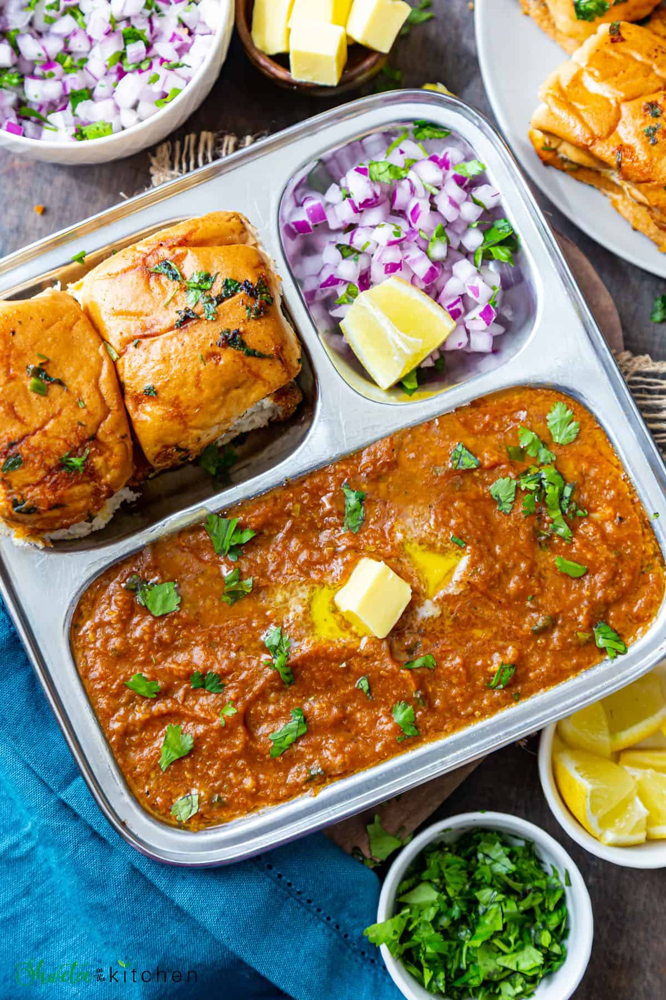

Pao Bhaji

Description
This Mumbai street-style pav bhaji recipe yields a thick, buttery, and perfectly spiced mashed vegetable curry (bhaji) served alongside soft, toasted dinner rolls (pav). Adding a small piece of beetroot while boiling gives the curry its iconic bright red street-style colour naturally, without any artificial dyes.
Ingredients
- Potatoes: 3 medium, peeled and diced
- Cauliflower: 1 cup
- floretsGreen peas: ½ cup (fresh or frozen)
- Carrot: 1 small, diced
- Beetroot: 1 small slice (for natural red colour)
- Water: 1.5 to 2 cups
- Water: 1.5 to 2 cups
- Salt: To taste
- Butter: 3 tablespoons (divided)
- Oil: 1 tablespoon (stops the butter from burning)
- Onion: 1 large, finely chopped
- Capsicum (Green bell pepper): ½ cup, finely chopped
- Ginger-garlic paste: 1 tablespoon
- Tomatoes: 3 large, finely chopped
- Pav bhaji masala: 2 to 2.5 tablespoons
- Kashmiri red chilli powder: 1.5 teaspoons (for mild heat and colour)
- Turmeric powder: ¼ teaspoon
- Kasuri methi (Dried fenugreek leaves): 1 teaspoon
- Lemon juice: 1 tablespoon
- Fresh coriander leaves: ¼ cup, finely chopped
- Pav buns: 8 rolls
- Butter: For toasting
- Finely chopped onion & lemon wedges: For garnish
Steps for Prepration
- Pressure Cook the Vegetables
- Place the potatoes, cauliflower, peas, carrots, and beetroot into a pressure cooker.
- Add salt and up to 2 cups of water.
- Cook for 3 to 4 whistles over medium heat until the vegetables turn completely soft
- Release the pressure, open the lid, and use a potato masher to mash the mixture into a smooth texture. Do not drain the leftover water.
- Prepare the Masala Base
- Heat 2 tablespoons of butter and 1 tablespoon of oil in a large, wide pan or kadai.
- Add the chopped onions and sauté until they turn translucent.
- Stir in the ginger-garlic paste and capsicum, cooking for 2 minutes until the raw smell disappears.
- Add the chopped tomatoes along with a pinch of salt. Cook until the tomatoes turn mushy and the fat begins to separate from the sides of the pan.
- Simmer and Combine
- Lower the heat and add the pav bhaji masala, Kashmiri red chilli powder, turmeric, and kasuri methi. Sauté the spices for 1 minute.
- Pour the mashed vegetable mixture into the pan.Mix everything together thoroughly. If the consistency feels too thick, pour in a splash of warm water.
- Simmer the curry on low heat for 8 to 10 minutes, mashing it occasionally to blend the flavours smoothly.
- Turn off the heat. Stir in the lemon juice, fresh coriander, and a final tablespoon of butter.
- Toast the Pav
- Slice the pav buns horizontally through the middle, leaving one edge attached.
- Melt a generous amount of butter on a hot tawa or griddle.
- Sprinkle a pinch of pav bhaji masala and a little chopped coriander directly into the melting butter.
- Press the open pav down onto the seasoned butter and toast both sides until warm and slightly crisp.
Serve the hot bhaji topped with an extra dollop of butter, alongside the toasted pav, chopped onions, and a fresh lemon wedge.
Home